第02讲 展开与折叠、截一个几何体
第02讲 展开与折叠、截一个几何体

课程标准 | 学习目标 |
①了解几何体的展开图及还原； ②截一个几何体。 | 1．了解棱柱、圆柱、圆锥的侧面展开图，特别是正方体的展开图，通过展开图还原立体图形，并会求表面积和体积。 2．经历切截以及从不同方向看等数学活动，积累数学活动经验； |

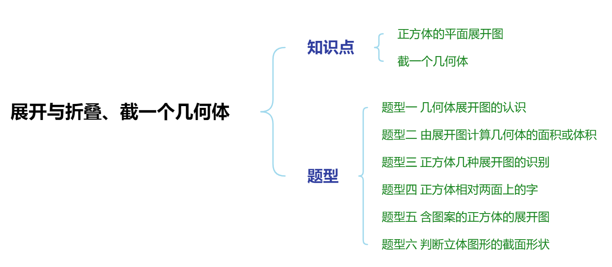

知识点01 正方体的平面展开图
正方体是特殊的棱柱，它的六个面都是大小相同的正方形，将一个正方体的表面展开，可以得到11种不同的展开图，把它归为四类：一四一型有6种；二三一型有3种；三三型有1种；二二二型有1种.
正方体展开图口诀： ①一线不过四;田凹应弃之； ②找相对面：相间，“Z”端是对面；③找邻面：间二，拐角邻面知.
【即学即练1】
1．（23-24九年级下·湖北荆州·阶段练习）下面哪个图象不是正方体的表面展开图（ ）
A． B． C． D．
2．（2024·河北石家庄·三模）如图，纸板上有9个小正方形（其中5个有阴影，4个无阴影），从图中4个无阴影的小正方形中选出一个（剩余的剪掉），与5个有阴影的小正方形一起折成一个正方体的包装盒，不同的选法有（ ）．
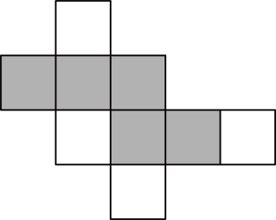
A．4种 B．3种 C．2种 D．1种
知识点02 截一个几何体
用一个平面去截一个几何体，截出的面叫做截面．截面的形状可能是三角形、四边形、五边形、六边形或圆等等．
【即学即练1】
1．（2024·四川成都·一模）用一个平面去截下列几何体，截面可能是矩形的几何体是（ ）
A． B．
B．
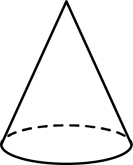
C． D．
D．
2．（2024·江苏南京·三模）如图，用一个平面从不同的位置，沿着不同的方向截取一个圆柱，圆柱的截面不可能是（ ）

A． B．
B． C． D．
C． D．

题型一 几何体展开图的认识
【典例1】 （2024·北京石景山·二模）下图是某几何体的展开图，该几何体是（ ）

A．三棱柱 B．三棱锥 C．四棱锥 D．圆柱
【变式1】（2024·陕西西安·模拟预测）下面图形中，经过折叠不能围成棱柱的是（ ）
A．
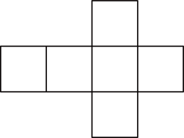
B．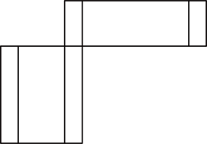
C．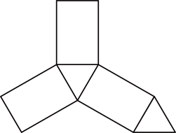
D．
【变式2】（23-24六年级下·黑龙江哈尔滨·期中）如图，下方立体图形的展开图是（ ）
 A．
A．
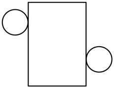
B． C．
C．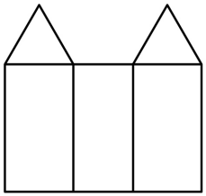
D．
【变式3】（2024·吉林白山·一模）如图，下面的平面图形是四个立体图形的展开图，其中展开图与立体图形名称对应正确的是（ ）
A．正方体 B．圆锥
B．圆锥 C．球 D．三棱柱
C．球 D．三棱柱
题型二 由展开图计算几何体的面积或体积
【典例2】（23-24六年级上·山东泰安·期中）如图，是一个几何体的表面展开图．

(1)该几何体是______；
(2)依据图中数据求该几何体的体积．
【变式1】（23-24七年级上·江西抚州·期中）如图所示是一个几何体的表面展开图．
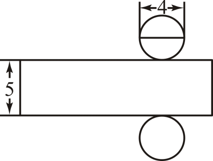
(1)该几何体的名称是__________；
(2)求该几何体体积（结果保留 ）．
）．
【变式2】（23-24九年级下·北京·阶段练习）某种产品的形状是长方体，长为 ，它的展开图如图．
，它的展开图如图．
(1)求长方体的体积；
(2)请为厂家设计一种包装纸箱，使每箱能装8件这种产品，要求设计时不计空隙且该纸箱所用材料最少（纸箱的表面积最小），并请求出你设计的纸箱的表面积．
【变式3】（23-24七年级上·广东佛山·阶段练习）如图所示为一个棱柱形状的食品包装盒侧面展开图.
(1)这个食品包装盒的几何体名称是___________________；
(2)若 ，
， ，
， ，
，
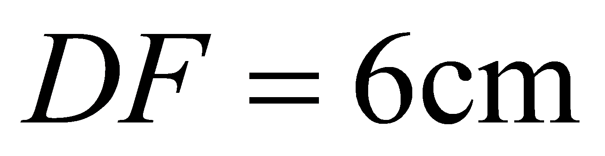
，求这个几何体的所有棱长的和及体积.题型三 正方体几种展开图的识别
【典例3】 （2024·山西阳泉·二模）下列图形为正方体展开图的是（ ）
A． B．
B． C．
C．
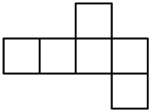
D．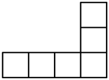
【变式1】（22-23九年级下·海南省直辖县级单位·期中）下列图形中，不是正方体表面展开图的是（ ）
A． B． C． D．
B． C． D．
【变式2】（23-24九年级下·河北保定·期中）分割并裁剪硬纸板得到如图所示的几个边长都相同的小正方形，若再剪去一个小正方形，便可折成一个正方体，剪掉的小正方形不可能是（ ）
A．① B．② C．③ D．④
【变式3】（23-24七年级上·贵州贵阳·期末）如图所示，从①②③④中选取一个正方形，能与阴影部分组成正方体展开图的是（ ）

A．① B．② C．③ D．④
题型四 正方体相对两面上的字
【典例4】 （2024·河南南阳·二模）北京时间2023年10月26日11时14分，搭载神舟十七号载人飞船的长征二号F遥十七运载火箭，在酒泉卫星发射中心点火发射，进入预定轨道，发射取得圆满成功将“圆满发射成功”六个字分别写在某正方体的表面上，如图是它的一种展开图，则在原正方体中，与“圆”字所在面相对的面上的汉字是（ ）

A．发 B．射 C．成 D．功
【变式1】（2024·陕西榆林·二模）如图所示，已知一个正方体展开图六个面依次书写“勇”“敢”“追”“逐”“梦”“想”，则折叠成正方体后，与“勇”相对的字是（ ）
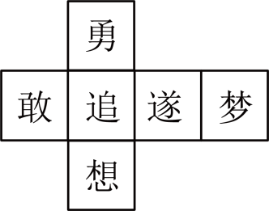
A．敢 B．追 C．梦 D．想
【变式2】（2024·河南许昌·二模）如图是一个正方体盒子的展开图，把展开图折叠成正方体后，和“数”字一面相对的面上的字是（ ）
A．发 B．现 C．之 D．美
【变式3】（2024·陕西汉中·二模）诸葛亮《诫子书》中有言“非学无以广才，非志无以成学”．如图是一个正方体的表面展开图，把展开图折叠成正方体后，“学”字对面的字是（ ）

A．非 B．广 C．才 D．以
题型五 含图案的正方体的展开图
【典例5】 （23-24六年级上·山东泰安·阶段练习）把左边的正方体的表面展开，可能得到的展开图是（ ）
A． B． C．
C． D．
D．
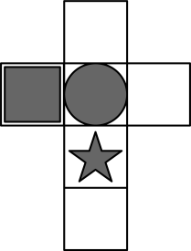
【变式1】（23-24七年级上·内蒙古包头·阶段练习）如图，把下边的图形折起来，它会变成选项的正方体（ ）
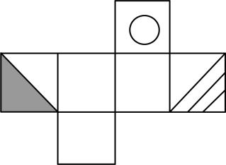
A． B．
B． C．
C． D．
D．
【变式2】（23-24七年级上·辽宁葫芦岛·阶段练习）如图所示是某个正方体的展开图，则这个正方体是（ ）
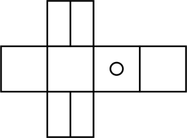
A．
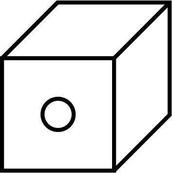
B． C．
C． D．
D．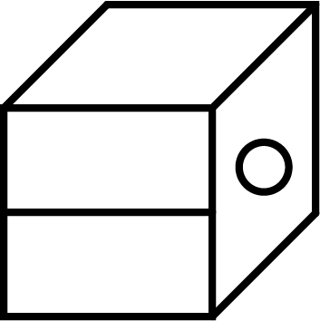
【变式3】（23-24七年级上·广东广州·期末）如图所示，正方体的展开图为（ ）
A． B．
B．
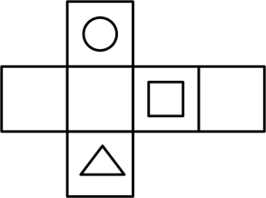
C． D．
D．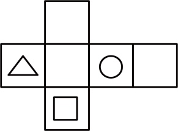
题型六 判断立体图形的截面形状
【典例6】（2023·贵州·模拟预测）如图，用一个平面去截一个正方体，截去的几何体是一个三棱锥，截面的图形是（ ）

A．六边形 B．圆 C．正方形 D．三角形
【变式1】（2024·陕西西安·三模）用一个平面去截一个球体，截面形状可能为（ ）
A． B．
B．
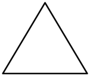
C． D．
D．
【变式2】（23-24七年级上·河南郑州·期末）用一个平面去截以下几何体：圆柱，圆锥，球，三棱柱，长方体，七棱柱；能截得三角形截面的几何体有（ ）个．
A．3 B．4 C．5 D．6
【变式3】（23-24七年级上·河南平顶山·期末）用一个平面去截棱柱，截面的形状是一个六边形，那该棱柱的展开图不可能是（ ）
A． B． C． D．

一、单选题
1．（23-24六年级上·山东泰安·阶段练习）用一个平面去截一个正方体，截出截面不可能是（ ）
A．三角形 B．五边形 C．六边形 D．七边形
2．（2024·河南许昌·二模）如图是一个正方体盒子的展开图，把展开图折叠成正方体后，和“一”字一面相对的面上的字是（ ）

A．中 B．考 C．夺 D．魁
3．（23-24七年级上·广东潮州·期中）已知某多面体的平面展开图如图所示，其中是棱锥的有（ ）

A．1个 B．2个 C．3个 D．4个
4．（23-24七年级上·江西萍乡·期中）将如图所示的正方体沿某些棱展开后，能得到的图形是（ ）

A．
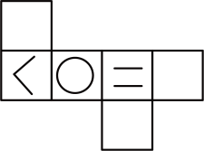
B．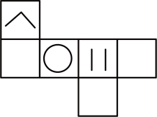
C．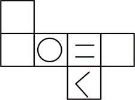
D．
5．（2024·河北张家口·三模）用硬卡纸做一个骰子，使骰子相对两面的点数之和为7，折叠前后如图所示，下列判断正确的是（ ）
A．点数1的对面是 面 B．点数2的对面是
面 B．点数2的对面是 面
面
C．， 两个面的点数和为9 D．，两个面的点数和为6
两个面的点数和为9 D．，两个面的点数和为6
二、填空题
6．（23-24七年级上·山东枣庄·期末）用一个平面去截一个三棱柱，截面可能是 ．（填一个即可）
7．（23-24七年级上·四川成都·阶段练习）如图是一个正方体的展开图，如果正方体相对的面上标注的值相等，那 ，
， ．
．

8．（2024·云南昭通·二模）如图，这是一个圆柱形笔筒，量的笔筒的高是 ，底面圆的直径是
，底面圆的直径是
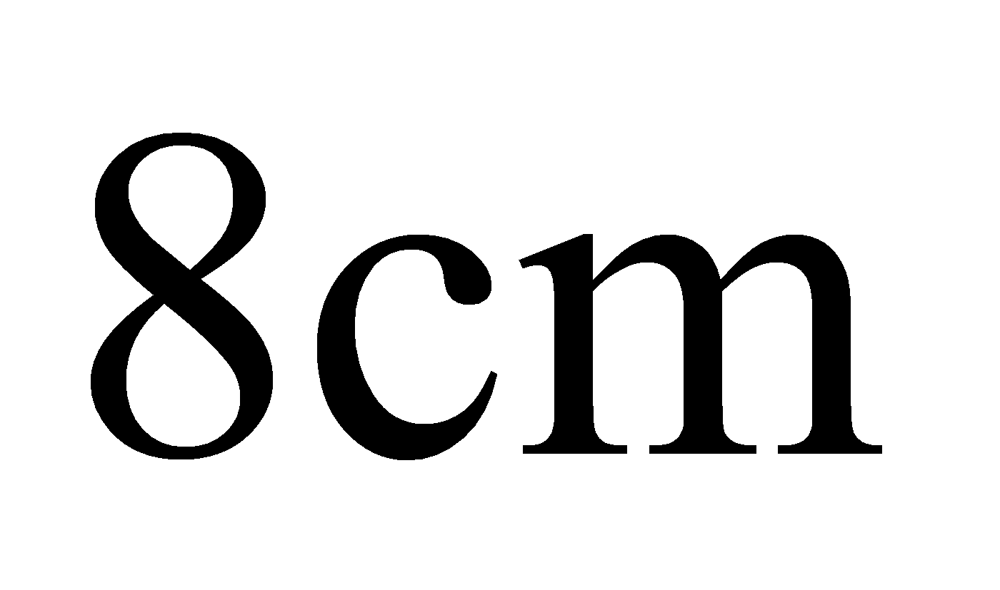
，则这个笔筒的侧面积为 （结果保留
（结果保留 ）．
）．9．（23-24九年级下·安徽·开学考试）某奶茶店推出了新款奶茶——“冰桶”系列，受到了年轻消费者的喜爱，已知该系列奶茶容器的轴截面可以看作是一个矩形与一个截去一个角的三角形拼接而成，其轴截面和俯视图如图所示．商家想要在“冰桶”的侧筒上贴上包装纸（没有重叠部分，不考虑材料厚度），则包装纸的面积为 ．

10．（23-24七年级上·安徽阜阳·期末）一个不透明小立方体的六个面上分别标有数字1，2，3，4，5，6，其展开图如图1所示．
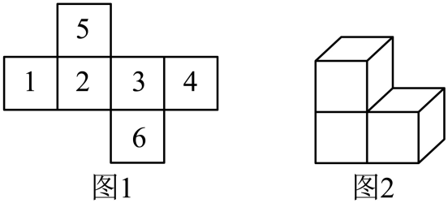
（1）与数字“5”相对的面上的数字是 ；
（2）在一张不透明的桌子上，按图2方式将三个这样的小立方体搭成一个几何体，则该几何体能看得到的面上数字之和最大是 ．
三、解答题
11．（23-24七年级上·江苏宿迁·阶段练习）指出下列平面图形各是什么几何体的展开图
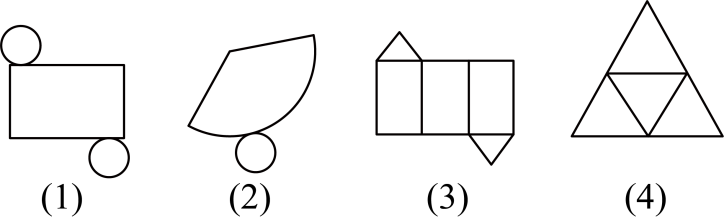
（1） ；（2） ；（3） ； （4） ．
12．（23-24七年级上·江西抚州·期中）如图所示是一个几何体的表面展开图．
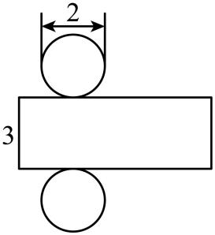
(1)该几何体的名称是 ，
(2)根据图中所给信息，求该几何体的侧面积和体积（结果保留 ）
）
13．（23-24七年级上·全国·课堂例题）如图是一个食品包装盒的展开图（图中的六边形的六条边相等）．
(1)请写出这个包装盒的立体图形的名称；
(2)请根据图中所标的尺寸，求这个立体图形的侧面积．
14．（23-24七年级上·辽宁沈阳·期中）如图所示三棱柱，高为 ，底面是一个边长为
，底面是一个边长为 的等边三角形．
的等边三角形．
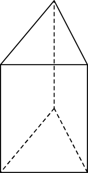
(1)该三棱柱有______条棱，有______个面；
(2)用一个平面去截该三棱柱，截面形状不可能是______（填序号）；
①三角形；②长方形；③五边形；④六边形；⑤圆形
(3)该三棱柱的所有侧面的面积之和是______．
15．（23-24六年级上·山东威海·期末）张明同学设计了某个产品的正方体包装盒如图所示，由于粗心少设计了其中一个顶盖，请你把它补上，使其成为一个两面均有盖的正方体盒子．

(1)共有______种弥补方法；
(2)任意画出一种成功的设计图（在图中补充）；
(3)在你帮忙在设计成功的图中，把2，3，4，5，6，7这些数字分别填入六个小正方形，使得折成的正方体相对面上的两个数相加的和相等．（直接在图中填上）
16．（23-24六年级上·山东烟台·期末）如图是一个几何体的表面展开图．
(1)写出该几何体的名称__________；
(2)用一个平面去截该几何体，截面形状可能是__________（填全所有可能的序号）；
①三角形；②四边形；③五边形；④六边形
(3)根据图中标注的长度（单位： ），求该几何体的表面积和体积．
），求该几何体的表面积和体积．